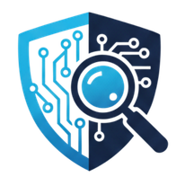

من نحن
تعرّف على رسالة وأهداف مبادرة وَعْي تك
ما هي مبادرة وَعْي تك ؟
وَعْي تك (WaieTech) هي مبادرة تقنية وطنية تهدف إلى نشر الوعي الرقمي وتعزيز الثقافة السيبرانية والمهارات التكنولوجية الحديثة لدى الشباب وأفراد المجتمع في المملكة الأردنية الهاشمية.
نسعى إلى تمكين الأفراد من فهم التكنولوجيا واستخدامها بشكل آمن وفعّال، من خلال تقديم محتوى تدريبي وتوعوي متقدم ومبسط في مجالات الأمن السيبراني، الذكاء الاصطناعي، والتحقيق الرقمي.

رؤيتنا
بناء مجتمع رقمي واعٍ، قادر على مواكبة التطور التكنولوجي المتسارع والتعامل مع التحديات والتهديدات الرقمية بثقة وأمان تام.
رسالتنا
توفير بيئة تعليمية وتوعوية رائدة تُسهم في تطوير المهارات الرقمية ونشر الوعي السيبراني بطرق حديثة ومبسطة تناسب مختلف الفئات المجتمعية.